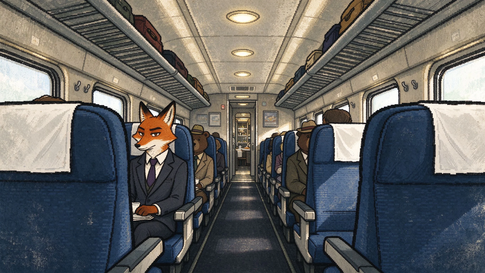
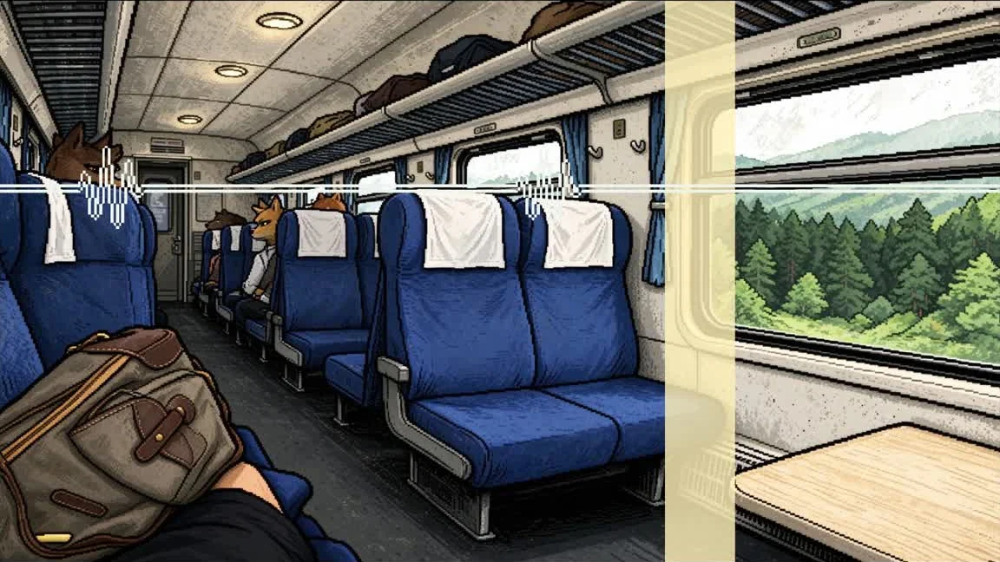
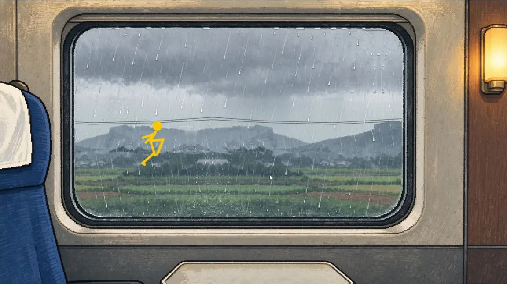
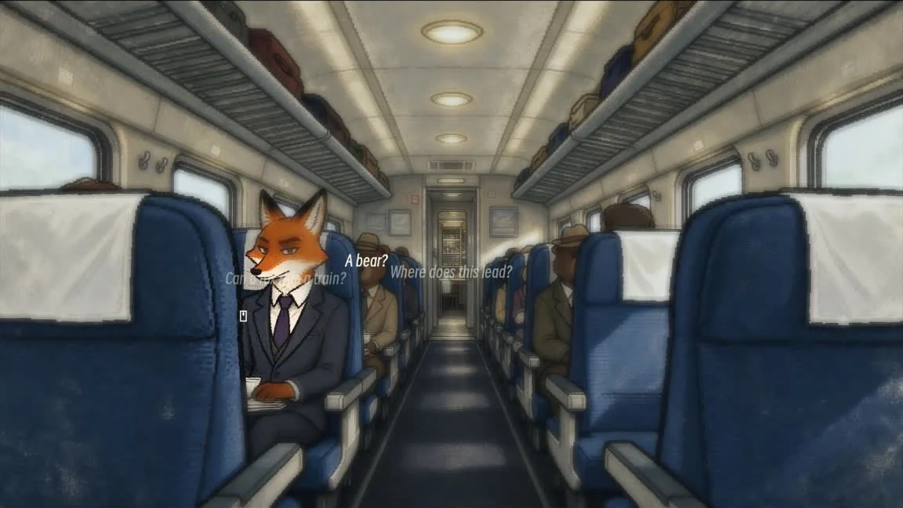
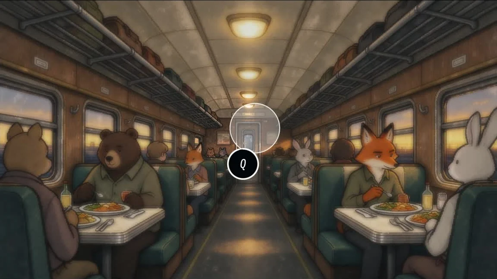
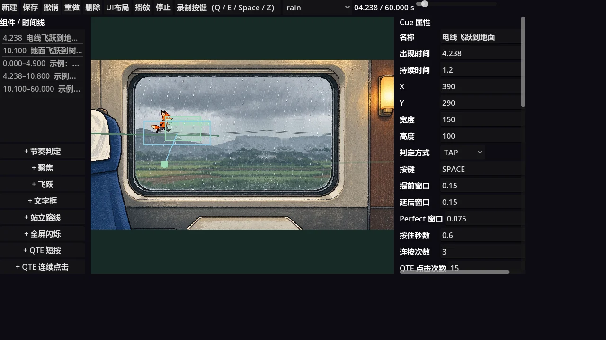

项目成果展示
《Train》是一款以长途火车为舞台的旅途叙事 Demo。小憩、抖腿、寻找耳机、看雨、为手机充电、前往餐车……旅途中的日常片段被转化为节奏、寻找、跑酷与 QTE 互动，在持续的列车声中串起一段从白天到夜晚的行程。

游戏类型旅途叙事 / 多种轻量互动
开发引擎Godot · GDScript
体验结构场景过渡与音乐驱动的互动片段交替
操作方式键盘节奏与 QTE、鼠标聚焦寻找、移动调整
核心体验 · 把日常变成可玩的片段
在同一趟列车上，切换不同的感受与操作
玩家始终身处列车，注意力却在身体、车厢和窗外之间移动。困意与抖腿对应节拍判定，噪音与低电量引出聚焦寻找，窗景成为跑酷舞台，穿行车厢则加入路线与 QTE。每种操作都从当下情境出发，让旅途中的等待、打扰与小目标成为交互。
节奏跟随音乐，在波形进入判定区域时按键回应。
寻找通过鼠标位置与聚焦观察，寻找耳机、充电位置等目标。
窗景把看雨时的想象转成窗外奔跑与障碍应对。
穿行在车厢与餐车中结合路线判断、移动和 QTE 推进。
实机截图




节奏与流程设计
每个互动片段由主题音乐组织时长，列车环境声则跨片段持续播放。场景与玩法随章节切换，声音维持旅途的连续感；节拍时钟跟随音乐播放位置，让节奏判定、视觉提示与章节进度保持一致。
工程将章节流程、音频与具体玩法分开管理，并提供自定义谱面编辑工具，用于调整节奏、路线与事件的编排。不同片段可以复用交互结构，再根据旅途情境配置各自的画面与目标。
